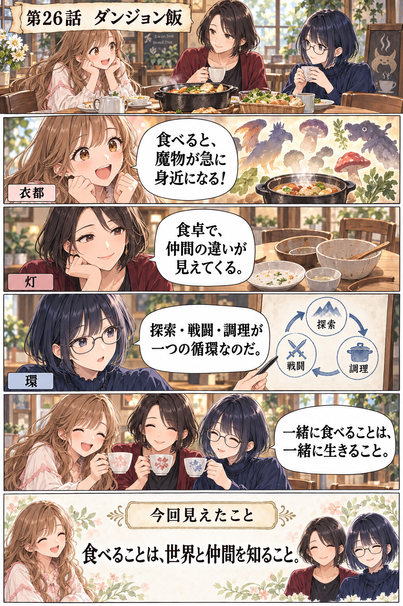

ダンジョン飯
食べることは、迷宮の仕組みと仲間の違いを、自分の体へ迎え入れること。
「最初は“魔物を料理する冒険もの”っていう変わった企画が入口だった。でも見ていくと、料理が面白いだけじゃなくて、同じ鍋を囲むたびに四人の距離が変わるんだよね。食べられるかどうかで、性格まで丸見えになるのが好き。」
「奇抜な設定が、切実な目的から始まっているのも大切ですね。ファリンを助けるために急いで迷宮へ戻りたい。でも食料を十分に用意する時間もお金もない。そこで魔物食が、冗談ではなく生き延びるための選択になる。」
「探索、戦闘、調理、回復が一つの循環になっているのだ。敵を倒せば経験値だけでなく食材が得られ、食べれば次の階層へ進める。通常は別メニューになりがちな行動が、迷宮生態系の中で一本につながっている。」
「動く鎧の正体が、中に人がいるんじゃなくて小さな生き物の集まりだと分かる場面、怖さが一気に好奇心へ変わった。しかもライオスは“倒した”で終わらず、どう生きていて、どこが食べられるかまで知りたがるんだよ。」
「その好奇心はライオスの魅力であり、危うさでもあります。魔物のことなら相手の動きを細部まで読めるのに、人の嫌悪や遠慮には気づきにくい。得意分野が万能な長所にならず、関係の摩擦まで生む人物造形が丁寧です。」
「図鑑でしかなかった情報が、食材リストと攻略情報へ変換されるのも面白いのだ。“危険だから避ける対象”に、捕獲方法、可食部、調理法という新しい操作可能性が加わる。世界の見え方そのものを更新するUIなのだ。」
「マルシルの顔も大事！ 毎回すごく嫌そうなのに、ちゃんと一口食べて、意外とおいしいと認める。その反応があるから、視聴者も安心して驚けるんだと思う。最初から全員が魔物食に賛成だったら、置いていかれちゃう。」
「マルシルは常識側の案内役ですが、ファリンを取り戻す局面では、自分が禁忌へ踏み込む側になる。古代魔術による蘇生は愛情の強さだけでは片づけられず、結果と責任を伴う。善意が危険を消さない描き方に緊張があります。」
「迷宮内では死と蘇生に固有のルールがあり、それが人物の判断を変えるのだ。現実と同じ感覚では大胆すぎる行動も、完全なゲーム感覚でもない。世界設定が背景説明ではなく、倫理判断の入力条件として働いている。」
「センシが“まず食べる”を譲らないの、最初はのんびりしすぎに見えるけど、だんだん頼もしさに変わる。急いでいるときほど食事を抜きたくなるのに、温かいものを食べる時間が、みんなを仲間へ戻してくれるんだよね。」
「センシの世話焼きも、ただ優しいだけではありません。長く迷宮で生きてきた経験と、食べることにまつわる過去があるから、栄養や調理を軽視できない。食事を勧める行為の奥に、失いたくないという恐れも見えます。」
「チルチャックが罠と鍵、交渉、危険判断を担当するのも重要なのだ。戦闘力だけでパーティーの価値を測らず、専門職の境界や報酬を主張する。迷宮攻略を英雄一人の物語ではなく、複数職種の共同作業にしている。」
「巨大なカエルの皮を使って危険な植物を抜けるところみたいに、ちょっと嫌なものが急に衣装や道具になるのも楽しい。かわいい、気持ち悪い、便利、おいしそうが同時に来るから、感情が一色にならないんだよ。」
「カブルーが人間関係を読むのは得意なのに魔物には苦戦し、ライオスはその逆に見える対比も効いています。どちらも観察者ですが、何へ関心を向けてきたかが違う。能力は才能だけでなく、長年の視線の向きで作られるんですね。」
「レシピ表示は単なる幕間ではなく、直前の戦闘結果を整理するリザルト画面なのだ。材料と工程を見せることで、荒唐無稽な料理に手触りが生まれる。同時に毎話の進行を区切り、視聴者の認知負荷も整えている。」
「赤竜との戦いも、強い技で押し切るんじゃなくて、迷宮の建物や仲間の役割、これまで集めた知識を全部使うのが熱い。食卓で重ねてきた小さな会話が、命を預ける連携につながっているように見えた。」
「そしてファリンを救えたと思ったあとも、“元に戻れば終わり”にはならない。大切な人を思うことと、その人を自分の望む形へ戻すことは同じではない。愛情が強いほど、相手の変化をどう受け止めるかが問われます。」
「食べる行為は、外部のものを分解して自分の一部へ変える処理なのだ。だからこの作品では、未知を排除するか理解するか、他者との違いを消すか共に暮らすかという大きな問いが、毎回の献立へ自然に接続される。」
「結局、同じものを食べても感想は全然違う。でも“違うね”って言いながら次の一皿を囲めるのが、このパーティーの強さなんだと思う。冒険の目的だけじゃなく、食べた時間そのものが一緒にいる理由になっていくんだね。」
今回見えたこと
- 衣都：驚きや苦手意識も含めて同じ食卓を囲むと、仲間の違いが親しさへ変わる。
- 灯：好奇心や愛情は人物を動かす力になる一方、相手への配慮と責任も求められる。
- 環：探索・戦闘・調理・回復の循環が、迷宮の生態系と物語進行を一つに結ぶ。
- 三人共通：食べることは、未知の世界と異なる他者を、自分の内側へ迎え入れる行為になる。
マンガ
